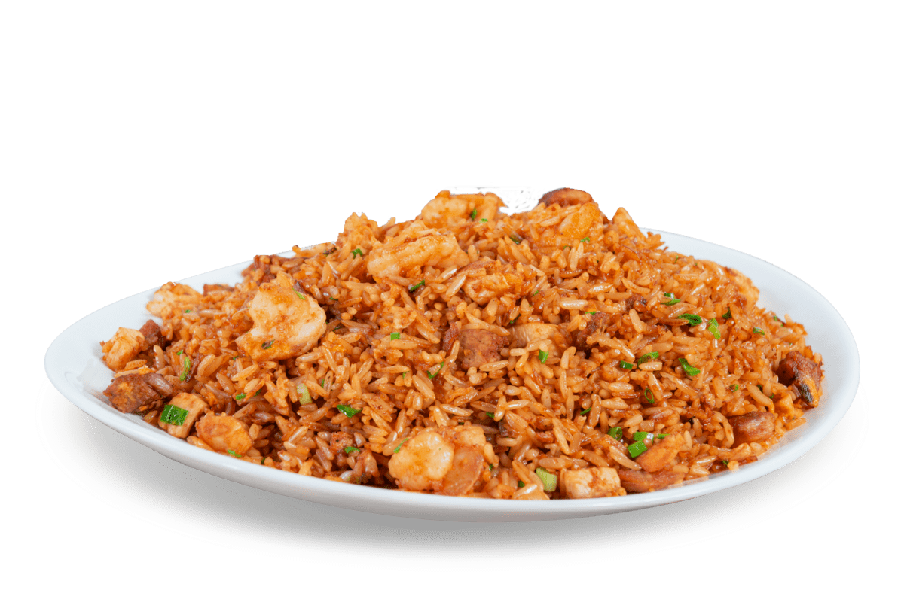

Chaulafan

Description
Chaulafan is a popular chinese dish among ecuadorians. Altought an expensive dish, it's also healthy and delicous
Ingredients
- Rice
- Chicken
- Pork
- Shrimps
- Vegetables
- Achiote
Steps
- Fry the rice on with a pan
- Whilst frying, give color to the rice by adding achiote
- On other pan, fry the chicken, pork and shrimps
- cook the vegetables, you can use your favorite ones
- Finally, add all the ingredients to the rice and serve with soy sauce